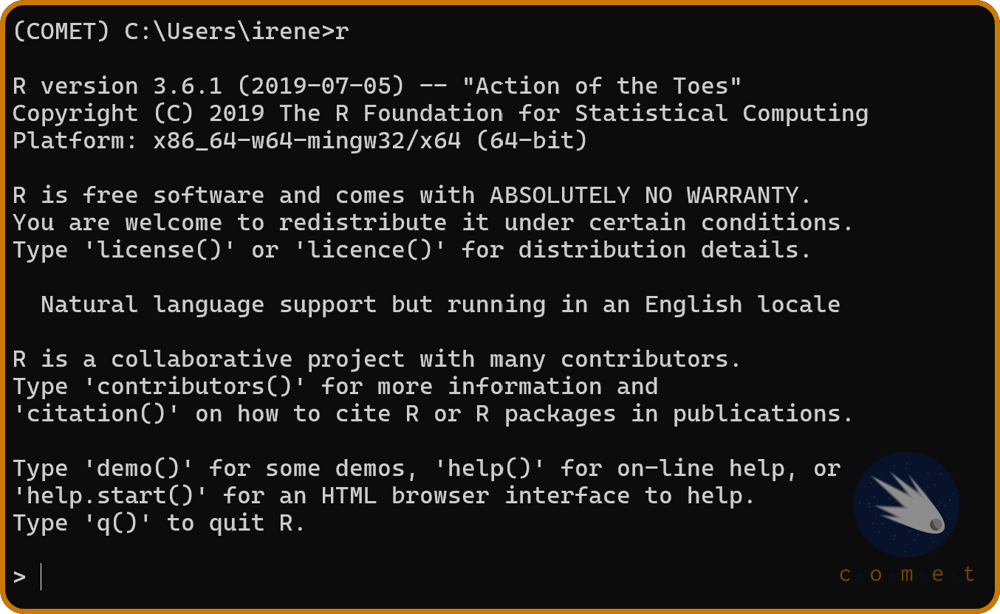

Running Via Jupyter Desktop
One alternative to running on a JupyterHub is running Jupyter locally though Jupyter Desktop. This is particularly helpful if you have a machine with a good CPU/GPU and would like to use it to it’s full abilities, or when you need to run commands that require more memory than UBC’s JupyterHub options offer.
In 2021, the developers of JupyterLab launched JupyterLab Desktop, a desktop application for JupyterLab, which this tutorial will demonstrate how to install and use.
Installing and Launching JupyterLab
To install JupyterLab on your machine, head to github.com/jupyterlab/jupyterlab-desktop and scroll down to installations. Then, select the version of the installer that you require. From there, open the installer and follow the instructions.
If you are on a Windows device, running the installer may prompt you with a warning. To bypass it, press Learn More > Run Anyway.
To launch JupyterLab, simply open the application.
Installing R
Additionally, we’ll need to install R and Rtools.
- Head to cran.r-project.org for windows and press
Download R-4.4.0 for Windows - Select
Okay > Nextand select your destination location. - Select the components
Main files,64-bit filesandMessage translations. Then, press next. - Select the toggle
No (acccept defaults)and press next. - Select both
save version number in registryandassociate R with .RData files. - Once the installation is complete, press
Finish.
- Head to cran.r-project.org for macOSx and select the release (on the left-hand side) suited for your device type.
- Open the installer and select
continue>continue>continue>agree>install.
3. Installing the R package compiler
We’ll need to install a package compiler in order to compile R packages from source.
RTools is a program that allows us to compile R packages.
In the Rtools installer, press Next > Next (ensuring that both check boxes are ticked) > Install.
For Mac, you’ll need to install Xcode Command Line Tools instead.
- Open the Mac terminal. To do so, click on the spotlight icon in the menu bar and search for “terminal.”
- Install Homebrew: Homebrew is a package manager for MacOS which we will use to install Xcode. In the Mac terminal, paste:
/bin/bash -c "$(curl -fsSL https://raw.githubusercontent.com/Homebrew/install/HEAD/install.sh)"
This might prompt you to enter your user password, which is the password that you use to sign into your device (Note that for privacy reasons you won’t be able to see the characters that you type). Once you’ve entered your password, press enter. This may take a while to run.
- You should get an output similar to this:

Notice the warning. To fix this, we’ll need to add our installation to the system path. In the terminal, run:
(echo; echo 'eval "$(/opt/homebrew/bin/brew shellenv)"') >> ~/.zprofile
followed by:
eval "$(/opt/homebrew/bin/brew shellenv)"
which will add the required path to the installation.
- Verify installations: to check that Xtools is installed, run
$ brew doctorin the termial. This should display the output “Your system is ready to brew.”
Installing conda and required packages
Additionally, we’ll need to install minconda, a python environment manager, in order to create an envrionment in which we will use our required packages.
- Head to anaconda.com and select the installer that meets your computer requirements.
Ensure that, during the installation process, you select the following options:
- Add Miniconda3 to my PATH environment variable
- Register Miniconda3 as my default Python 3.12
Once installed, search for
Anaconda Prompt (miniconda3)in your files and open it as an administrator. This should open up a terminal.In the terminal, enter the following line code:
conda create -n comet_env jupyterlab r-essentials git r-tidyverse r-car r-stargazer r-estimatr
The first part of this command will create a new python environment called “comet”. An envrionment is an isolated space on your computer where you can work on a given project without the risk of breaking other projects. Essentially, this acts as a safety layer to protect our computer.
The second part of this command will add the required r packages for the COMET modules to the environment.
Lastly, to enable the environment, run conda activate comet_env.
Installing the R kernel
We’ll need to install the R kernel in order to use the R programming language in Jupyter. To do so, in the miniconda terminal, run r. This should result in the following output:

If you recieved this output, it means that everything has been set up correctly. Lastly, run the following lines of code in the terminal:
install.packages('IRkernel')
IRkernel::installspec()
This will prompt you to select a CRAN mirror. Select the one closest to you (if you are at UBC, this would be “Canada (MB)”.)
Selecting our environment in Jupyter Desktop
Lastly, we’ll need to select our environment. To do so, open jupyter desktop and press on the two blue bars at the top right of the application. This will prompt you to select your new environment. If the previous installation steps were successfull, you should see the COMET environment.
Once pressed, this will restart your current session. To check that everything is been set up properly, select the R kernel and run installed.packages() in a new notebook. If the output gives a list of R packages, the installation has been successful.
Additional resources
If you would like to learn more about how to use Jupyter Desktop, consider checking out the Jupyter github page found here.